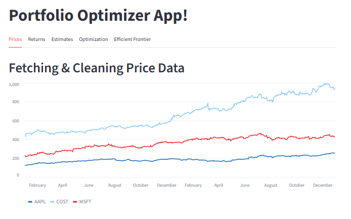
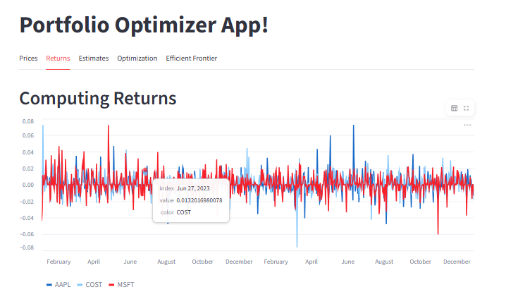
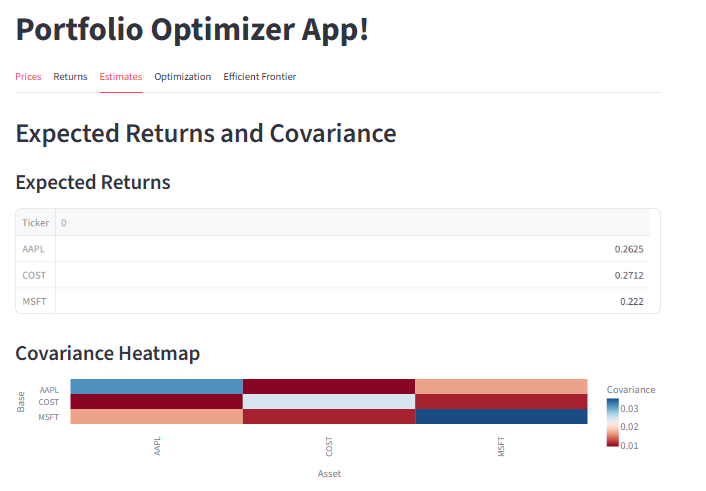
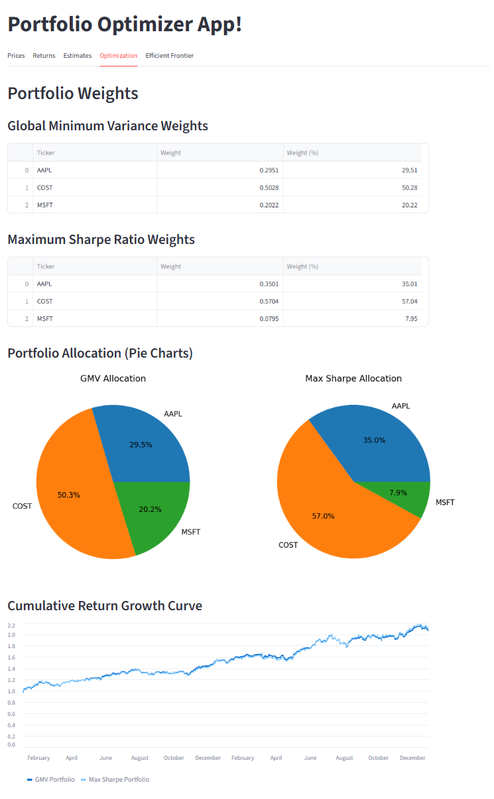
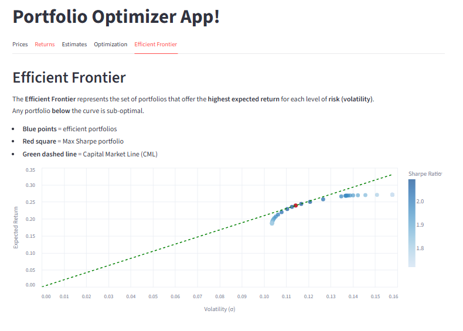

Final Project Report: Portfolio-MPT
Introduction
This project implements portfolio-mpt, a Python package designed to support Modern Portfolio Theory (MPT) workflows including:
- Financial data collection
- Data cleaning and wrangling
- Return and covariance estimation
- Portfolio optimization (GMV, Max Sharpe, Efficient Frontier)
- Visualization of results
- An interactive Streamlit dashboard
- A fully documented Quarto website
The goal is to provide a complete, reproducible pipeline from raw market data to portfolio insights using open-source tools.
This written report accompanies the full Quarto documentation site and is hosted on the same GitHub Pages deployment, as required.
Data Collection & Cleaning
Data Retrieval
Price data is obtained through Yahoo Finance via the yfinance library. Users specify:
- a list of tickers
- start and end dates
- frequency interval
via the FetchSpec dataclass.
Prices are stored locally in parquet format along with a manifest file capturing metadata such as tickers, time range, and library versions.
All price data used in this project is obtained dynamically via the Yahoo Finance API. The dataset is not prepackaged; every run fetches fresh, original data based on the selected tickers and date ranges.
Data Cleaning Pipeline
Raw financial data often contains:
- missing timestamps
- non-uniform trading days
- duplicated entries
The cleaning module ensures:
- timestamps are normalized
- duplicate rows are removed
- data is reindexed to daily frequency
- forward/backward filling handles gaps
This results in high-quality, analysis-ready price matrices.
Data Wrangling
The wrangling module converts prices into useful return formats:
- simple returns
- log returns
- excess returns
- cumulative and rolling returns
These transformations form the statistical foundation for portfolio analysis.
Statistical Analysis
Expected Returns
Two methods are supported:
- arithmetic mean returns
- exponential moving average (EMA)
Values are annualized to match typical MPT conventions.
Covariance Matrix
Risk estimation is performed using:
- sample covariance (default)
- Ledoit–Wolf shrinkage estimator (optional)
Annualized covariance is used to compute portfolio volatility.
Portfolio Optimization
Three major optimization routines are implemented:
1. Global Minimum Variance (GMV) Portfolio
- Minimizes volatility
- Produces the most stable portfolio allocation
2. Maximum Sharpe Ratio Portfolio
- Balances return and risk
- Finds the tangency portfolio on the Capital Market Line
3. Efficient Frontier
Two methods:
- target-return sweep
- risk-aversion frontier (smooth, convex, recommended)
These routines output weights, return, volatility, and Sharpe ratio.
Visualization
Visualization tools include:
- price and return charts
- efficient frontier scatter plots
- Capital Market Line
- portfolio allocation pie charts
- simulated future portfolio paths (Monte Carlo)
- cumulative growth curves
- portfolio statistics tables
The Streamlit interface uses these visualizations to provide an interactive analysis environment.
Streamlit Dashboard
The dashboard can be accessed here and consists of multiple tabs:
- Prices — cleaned price data

- Returns — daily returns visualization

- Estimates — expected returns and covariance tables

- Optimization — GMV and Max Sharpe results, weights, charts

- Efficient Frontier — frontier, CML, tangency portfolio

- Monte Carlo Simulation — future growth simulations, distributions

This offers a hands-on view of portfolio behavior and tradeoffs.
Documentation
A complete Quarto documentation site includes:
- Home page
- Tutorial
- API Reference
- Final report
Published via GitHub Pages for public access.
Testing
Test coverage includes:
- data fetching
- wrangling
- analysis
- optimization
This ensures correctness and stability across module workflows.
Conclusion
This portfolio-mpt project provides a full ecosystem for Modern Portfolio Theory analysis in Python:
- reproducible data acquisition
- rigorous financial statistics
- optimization routines
- interactive visualization
- well-organized documentation
The result is a flexible, reusable toolkit suitable for students, analysts, and developers exploring quantitative finance.
Appendix
This report is part of the Quarto documentation website accompanying the project.